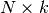
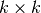

The WaveBlocks Project
@author: R. Bourquin @copyright: Copyright (C) 2010, 2011, 2012 R. Bourquin @license: Modified BSD License
The WaveBlocks Project
This file contains several different algorithms to compute the matrix exponential. Currently we have an exponential based on Pade approximations and an Arnoldi iteration method.
@author: R. Bourquin @copyright: Copyright (C) 2007 V. Gradinaru @copyright: Copyright (C) 2010, 2011 R. Bourquin @license: Modified BSD License
Arnoldi algorithm (Krylov approximation of a matrix)
| Parameters: |
|
|---|---|
| Returns: | A tupel (V, H) where V is the matrix (large, ) containing the orthogonal vectors and H is the matrix (small, ) containing the Krylov approximation of A. |